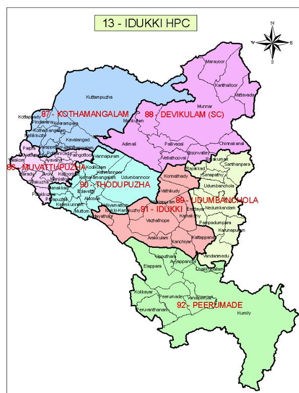

Idukki
Tourist Destinations
Idukki arch dam
The Idukki Dam is a double curvature Arch dam constructed across the Periyar River in a narrow gorge between two granite hills locally known as Kuravan and Kurathi in Mariyapuram village in Idukki District in Kerala, India. At 168.91 metres (554.2 ft),[1] it is one of the highest arch dams in Asia. It is constructed and owned by the Kerala State Electricity Board. It supports a 780 MW hydroelectric power station in Moolamattom, which started generating power on 4 October 1975.[2] The dam type is a concrete, double curvature parabolic, thin arc dam.[3] The Indo-Canadian project was inaugurated by the Prime Minister Indira Gandhi on February 17, 1976.[4]


Hill view
Idukki Hill View Park Hill View Park in Idukki is an adventure destination for tourists Can enjoy the cool breeze and light rain, . Cheruthoni Idukki Dams can be seen in a single frame along with the Idukki Reservoir which is full from the view point of the park. hill-view-park-idukki Hill View Park is located close to Idukki Dam and Cheruthoni Dam. The park is 350 feet above the water level of the dam. Hill View Park is located at a distance of 1.5 km from Idukki. The beautifully landscaped garden is spread over 8 acres. It also has a natural lake to add to its charm. As the name suggests, visitors can get a beautiful view of the environment from here. Deer, wild buffalo and elephants roam freely in their natural habitat. A boat ride through the lake will make the views of the forest a little closer and more vibrant. There is a garden of herbs and playgrounds where children can have fun. A visit to Idukki would not be complete without visiting Hill View Park.
Ramakalmedu
Although Ramakkalmedu has potential for it to become an international tourist destination, and already attracts more than 100,000 visitors. However, as of 2015 not much had been done for the improvement of basic facilities nearby. The government of Kerala has announced plans to develop this tourist station by improving transportation facilities with buses, upgrading of the Kerala police and other measures..